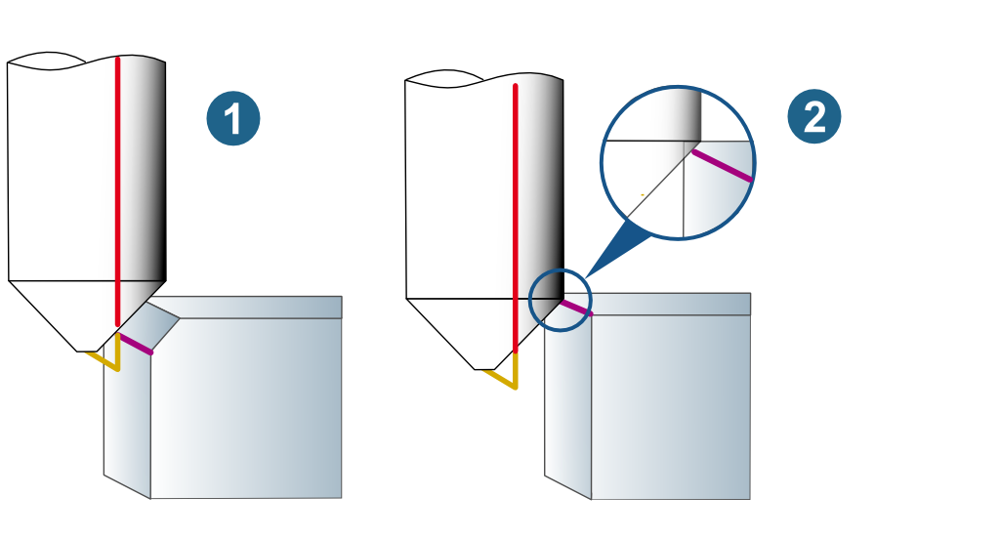
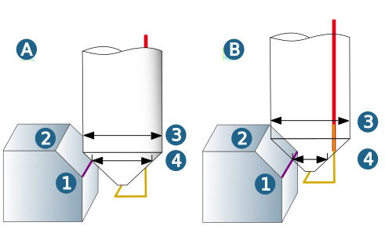
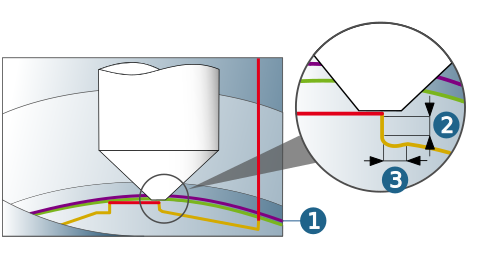

Strategy
Chamfer mode
Modelled chamfer (1): The height of the chamfer is defined by the model geometry.
Deburr / chamfer sharp edges (2): The height of the chamfer is defined on the Parameters dialog page.
|  |
The following describes the two machining strategies using several examples and definitions with different parameters.
Example 1
(A) Chamfer mode: Modelled chamfer, Path compensation: Center path, Nominal diameter of the Tool dialog page.
(1) Defined contour, (2) Model, (3) Tool diameter, (4) Nominal diameter.
(B) When entering a value or changing the default value T:Ndia on the Parameters dialog page, the Nominal diameter of the Tool dialog page will no longer be used.
(1) Defined contour, (2) Model, (3) Tool diameter, (4) Nominal diameter.
|  |
Example 2:
Chamfer mode: Deburr / chamfer sharp edges, Path compensation: Center path. An infeed step is defined for the Vertical stepdown. The chamfer height specifies the number of infeeds.
(1) Defined contour, (2) Infeed step, (3) Chamfer height, (4) Finishing allowance.
 |
Example 3
Chamfer mode: Deburr / chamfer sharp edges, Retract mode: Production mode. In case of a potential collision, a retraction is executed as the shortest possible link between the infeeds.
(1) Defined contour, (2) Axial clearance, (3) Lateral clearance.
|  |
Example 5
Chamfer mode: Deburr / chamfer sharp edges.
(1) Stop surfaces: model areas that may not be violated, (2) Contour.
 |
To avoid ‘unnecessary’ error messages when machining with the Deburr / chamfer sharp edges strategy, the collision check has been changed, based on the geometry of the Chamfered cutter tool type. The chamfer of the tool may now violate the component when deburring with the chamfer without an error message being generated.
Toolpath fillets
Fillet interior corners: Smooth filleting (rounding) of internal milling paths at the corners of contour pockets or islands (1).

Edge behavior
Defines the behavior of the tool at the outer edges of the model.
Break edge: Use the Chamfer option (1) to chamfer the edges or the Rounding option (2) to round the edge.
Length: Length of the chamfer or fillet.
Max. corner angle: Maximum angle between two contour elements up to which the edge is to be broken.

Example: Edge angle on the component: 150°, Max. corner angle defined: 130°. Edge is not broken, all edges less than or equal to 130° are broken.